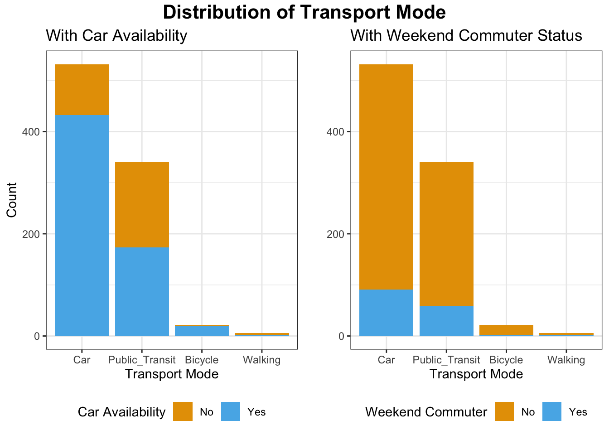
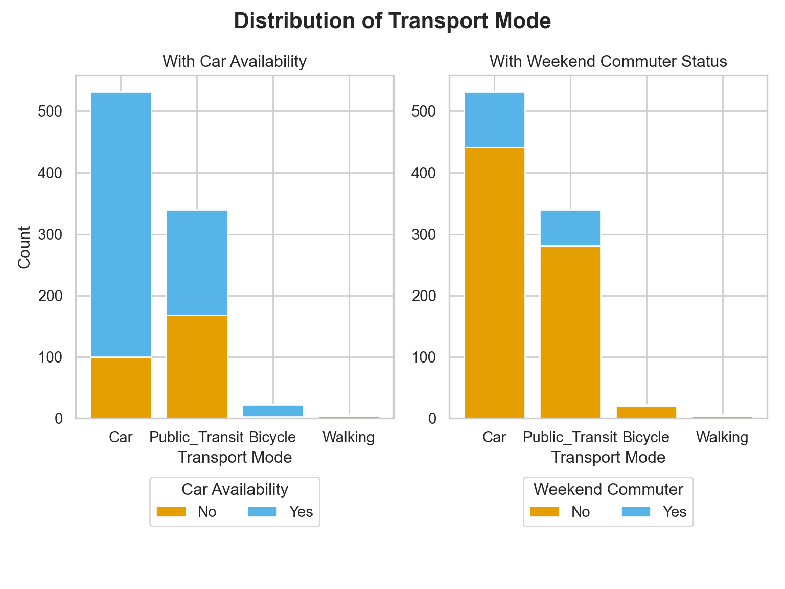
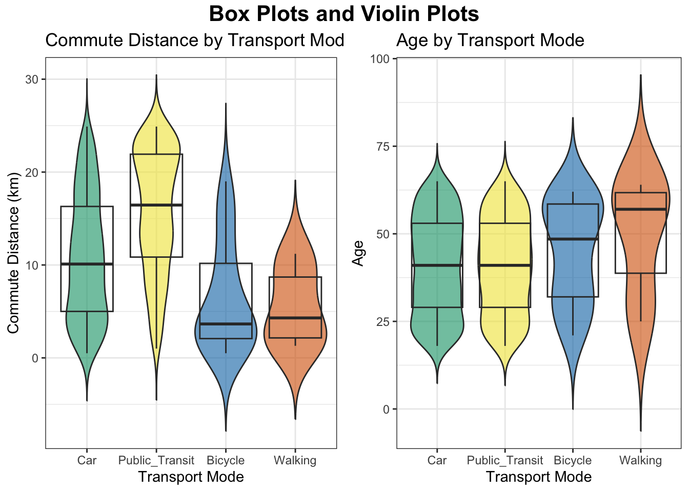
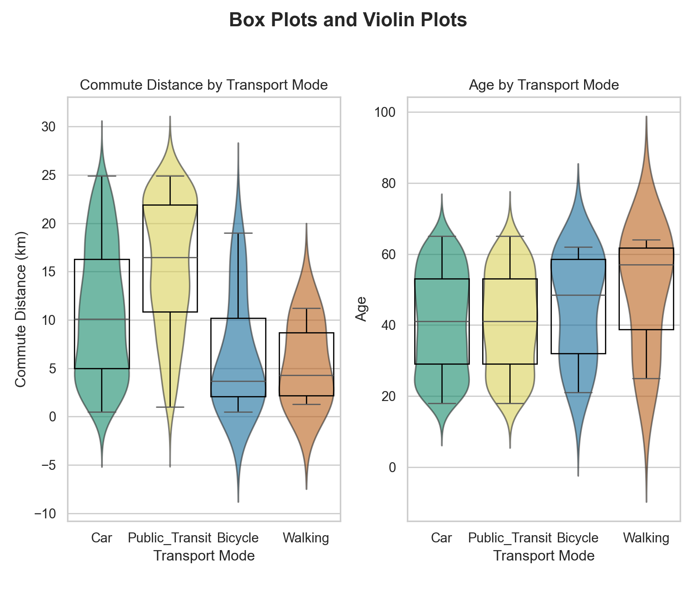
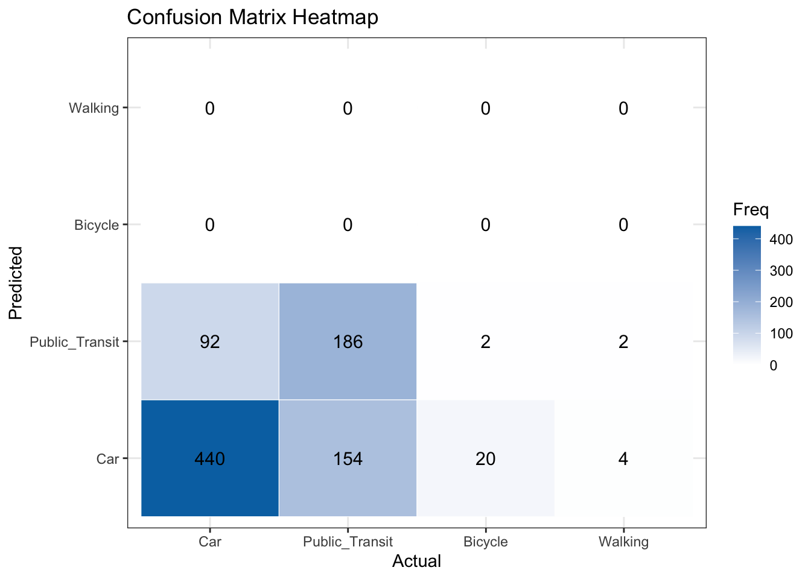
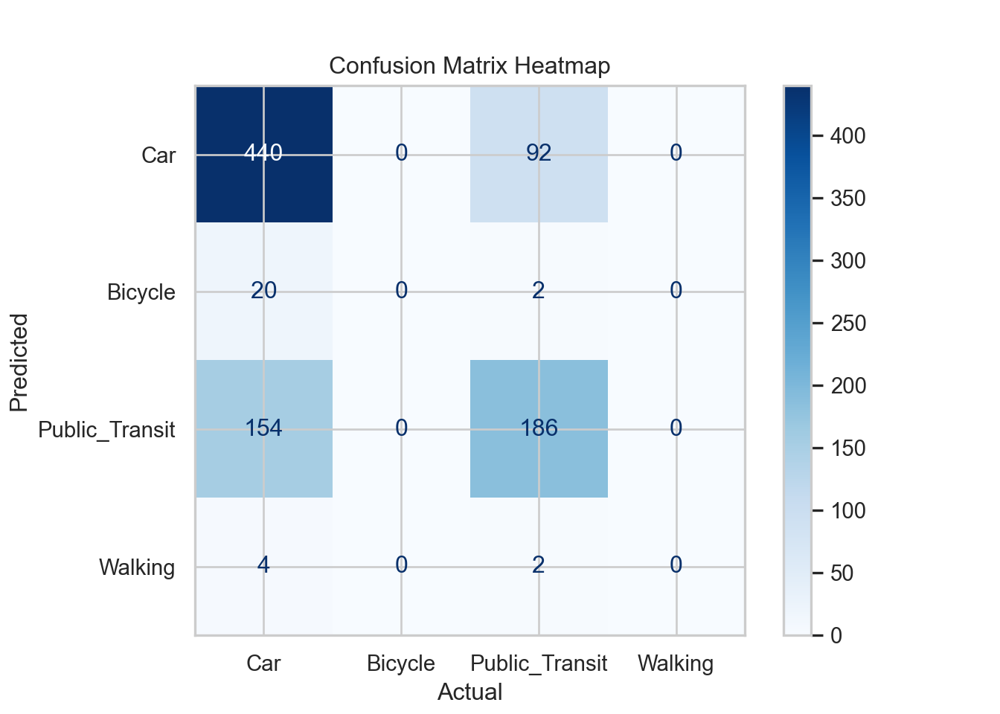
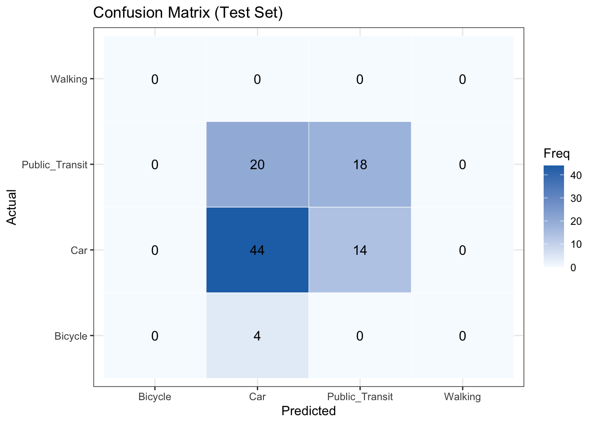
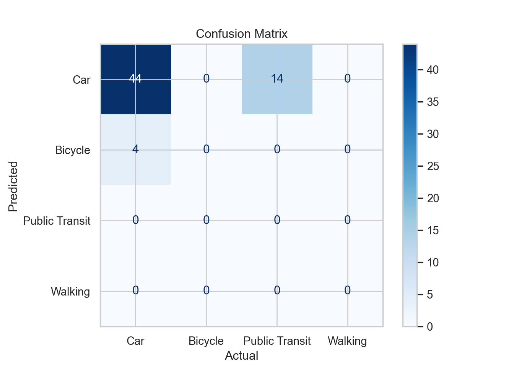

mindmap
root((Regression
Analysis)
Continuous <br/>Outcome Y
{{Unbounded <br/>Outcome Y}}
)Chapter 3: <br/>Ordinary <br/>Least Squares <br/>Regression(
(Normal <br/>Outcome Y)
{{Nonnegative <br/>Outcome Y}}
)Chapter 4: <br/>Gamma Regression(
(Gamma <br/>Outcome Y)
{{Bounded <br/>Outcome Y <br/> between 0 and 1}}
)Chapter 5: Beta <br/>Regression(
(Beta <br/>Outcome Y)
{{Nonnegative <br/>Survival <br/>Time Y}}
)Chapter 6: <br/>Parametric <br/> Survival <br/>Regression(
(Exponential <br/>Outcome Y)
(Weibull <br/>Outcome Y)
(Lognormal <br/>Outcome Y)
)Chapter 7: <br/>Semiparametric <br/>Survival <br/>Regression(
(Cox Proportional <br/>Hazards Model)
(Hazard Function <br/>Outcome Y)
Discrete <br/>Outcome Y
{{Binary <br/>Outcome Y}}
{{Ungrouped <br/>Data}}
)Chapter 8: <br/>Binary Logistic <br/>Regression(
(Bernoulli <br/>Outcome Y)
{{Grouped <br/>Data}}
)Chapter 9: <br/>Binomial Logistic <br/>Regression(
(Binomial <br/>Outcome Y)
{{Count <br/>Outcome Y}}
{{Equidispersed <br/>Data}}
)Chapter 10: <br/>Classical Poisson <br/>Regression(
(Poisson <br/>Outcome Y)
{{Overdispersed <br/>Data}}
)Chapter 11: <br/>Negative Binomial <br/>Regression(
(Negative Binomial <br/>Outcome Y)
{{Zero Inflated <br/>Data}}
)Chapter 12: <br/>Zero Inflated <br/>Poisson <br/>Regression(
(Zero Inflated <br/>Poisson <br/>Outcome Y)
{{Overdispersed or <br/>Underdispersed <br/>Data}}
)Chapter 13: <br/>Generalized <br/>Poisson <br/>Regression(
(Generalized <br/>Poisson <br/>Outcome Y)
{{Categorical <br/>Outcome Y}}
{{Nominal <br/>Outcome Y}}
)Chapter 14: <br/>Multinomial <br/>Logistic <br/>Regression(
(Multinomial <br/>Outcome Y)
14 Multinomial Logistic Regression
When to Use and Not Use Classical Poisson Regression
Multinomial Logistic regression is a type of generalized linear model that is appropriately used under the following conditions:
However, Multinomial Logistic regression should not be used in the following scenarios:
Learning Objectives
By the end of this chapter, you will be able to:
- Describe why ordinary linear models are inappropriate for multi-class nominal outcomes.
- Determine when multinomial logistic regression is an appropriate modeling choice (unordered categorical response with >2 categories; suitable predictors; independent observations).
- Write down the multinomial likelihood and the system of logit link functions relative to a reference category; express class probabilities that sum to one.
- Understand the computation procedure for coefficient estimation via maximum likelihood.
- Interpret multinomial logistic regression coefficients in real scenarios (log-odds vs. baseline, odds ratios, contrasts between non-baseline categories, predicted probabilities).
- Evaluate model performance and construct confidence intervals (confusion matrix, accuracy, log-loss, cross-validation; Wald/LR tests and CIs).
14.1 Introduction
Multinomial logistic regression is a statistical modeling technique used to analyze relationships between a multi-class categorical response variable and a set of explanatory variables. Unlike binary logistic regression, which models outcomes with two categories, multinomial logistic regression extends the framework to outcomes with more than two unordered categories. It estimates the probability of each possible outcome as a function of the predictors by modeling the log-odds of each category relative to a reference category. This method is widely used in fields such as transportation, marketing, and social sciences where the goal is to understand or predict categorical choices among multiple alternatives.
14.1.1 Multinomial Logistic Regression Assumptions
- The response or dependent variable should be measured at the nominal level with more than two values.
- There should be one or more independent variables that are continuous, ordinal or nominal (including dichotomous variables).
- Logit linearity assumption: There needs to be a linear relationship between any continuous independent variables and the logit transformation of the dependent variable.
- Independent observations: The observations should be independent and the dependent variable should have mutually exclusive and exhaustive categories (i.e. no individual belonging to two different categories).
- No Multicollinearity: Multicollinearity occurs when you have two or more independent variables that are highly correlated with each other.
- There should be no outliers, high leverage values or highly influential points.
14.2 Case Study
We will explore a dataset containing information on individuals’ commuting behaviors and demographics, with a focus on their primary mode of transportation. We explore a couple of research problems based on the dataset.
- How is the transportation mode of people (driving own cars or taking public transportation specifically) associated by their commuting distances, given the individuals’ commuting behaviors and demographics including if they have a car, if they commute on weekends, and ages?
- Can we accurately predict the transportation mode of an individual based on their commuting behaviors and demographics including if they have a car, if they commute on weekends, their commute distance, and age?
The two research problems correspond to inferential and predictive statistical objectives respectively:
- To estimate the association between the explanatory variable—commute distance—and the probability of each category of the response—using each transport mode (car v.s. public transportation specifically), given the confounding effects of age, car availability, and weekend commuter status.
- To develop a predictive model that classifies individuals into their most likely transport mode using the predictors commute distance, age, car availability, and weekend commuting status.
14.3 Data Collection and Wrangling
The dataset includes the following five variables:
-
transport_mode(categorical, 4 levels):- The primary mode of transport used by the individual. Categories: “Bicycle”, “Car”, “Public Transit”, “Walking”. This variable is used as the response in data modelling.
-
commute_distance(numeric):- The one-way commuting distance in kilometers.
-
age(numeric):- The age of the individual in years.
-
has_car_available(binary categorical):- Indicates whether the individual has access to a car. Levels: “Yes” or “No”.
-
weekend_commuter(binary categorical):- Indicates whether the individual commutes during weekends. Levels: “Yes” or “No”.
url = "https://raw.githubusercontent.com/andytai7/cookbook/refs/heads/main/raw-data/multinomial_transport.csv"
data = pd.read_csv(url)
data = data.iloc[:, :-1]
print(f"There are {data.shape[0]} observations and {data.shape[1]} variables in the dataset.")
print(data)There are 1000 observations and 5 variables in the dataset.# A tibble: 1,000 × 5
transport_mode commute_distance age has_car_available weekend_commuter
<chr> <dbl> <dbl> <chr> <chr>
1 Public_Transit 22.9 58 No No
2 Public_Transit 23.5 21 Yes Yes
3 Bicycle 7.5 57 Yes No
4 Public_Transit 20.8 43 No No
5 Public_Transit 16.2 41 No No
6 Car 13.2 19 No No
7 Car 18.5 44 Yes No
8 Public_Transit 3.8 52 No No
9 Public_Transit 16.6 29 Yes No
10 Public_Transit 17.8 56 Yes No
# ℹ 990 more rowsThere are 1000 observations and 5 variables in the dataset. transport_mode commute_distance age has_car_available weekend_commuter
0 Public_Transit 22.9 58 No No
1 Public_Transit 23.5 21 Yes Yes
2 Bicycle 7.5 57 Yes No
3 Public_Transit 20.8 43 No No
4 Public_Transit 16.2 41 No No
.. ... ... ... ... ...
995 Public_Transit 3.9 30 No No
996 Car 13.9 22 Yes No
997 Public_Transit 1.9 29 No No
998 Car 12.6 34 Yes No
999 Bicycle 0.7 63 No No
[1000 rows x 5 columns]Factorize the categorical variables. There are four types of transport mode which are by bicycle, car, public transit, and walking.
# Factorize the categorical variables and print their levels
categorical_cols = ['transport_mode', 'has_car_available', 'weekend_commuter']
for col in categorical_cols:
data[col] = data[col].astype('category')
print(f"Levels of {col}: {list(data[col].cat.categories)}")Levels of transport_mode : Bicycle Car Public_Transit Walking
Levels of has_car_available : No Yes
Levels of weekend_commuter : No Yes Levels of transport_mode: ['Bicycle', 'Car', 'Public_Transit', 'Walking']
Levels of has_car_available: ['No', 'Yes']
Levels of weekend_commuter: ['No', 'Yes']Now, we split the dataset into training and test sets, use training set to fit the model, and use test set to assess the model performance.
# Split the data: first 90% for training, last 10% for test
split_idx = int(len(data) * 0.9)
train_set = data.iloc[:split_idx].reset_index(drop=True)
test_set = data.iloc[split_idx:].reset_index(drop=True)
print(f"Training set size: {len(train_set)}")
print(f"Test set size: {len(test_set)}")Training set size: 900Test set size: 100Training set size: 900Test set size: 10014.4 Exploratory Data Analysis
Let’s visualize the response transport_mode and its relationship with the continuous or categorical(binary) explanatory variables (predictors).
# Custom color palette `cbPalette`
cbPalette <- c("#E69F00", "#56B4E9", "#009E73", "#F0E442", "#0072B2", "#D55E00", "#CC79A7")
# Sort `transport_mode` by frequency
train_set$transport_mode <- factor(train_set$transport_mode, levels = names(sort(table(train_set$transport_mode), decreasing = TRUE)))
p1 <- train_set %>%
ggplot(aes(x = transport_mode, fill = has_car_available)) +
geom_bar(position = "stack") + # use "stack" for counts, "fill" for proportions
labs(y = "Count", title = "With Car Availability") +
scale_fill_manual(values=cbPalette) +
theme_bw() +
theme(legend.position = "bottom") +
guides(fill = guide_legend(title = "Car Availability"))
p2 <- train_set %>%
ggplot(aes(x = transport_mode, fill = weekend_commuter)) +
geom_bar(position = "stack") + # use "stack" for counts, "fill" for proportions
labs(x = "Transport Mode", y = "Count", title = "With Weekend Commuter Status") +
scale_fill_manual(values=cbPalette) +
theme_bw() +
theme(legend.position = "bottom") +
guides(fill = guide_legend(title = "Weekend Commuter"))
grid.arrange(p1, p2, ncol = 2, top = grid::textGrob("Distribution of Transport Mode", gp = grid::gpar(fontsize = 16, fontface = "bold")))# Custom color palette `cbPalette`
cbPalette = ["#E69F00", "#56B4E9", "#009E73", "#F0E442", "#0072B2", "#D55E00", "#CC79A7"]
# Sort transport_mode by frequency
order = train_set['transport_mode'].value_counts().index
train_set['transport_mode'] = pd.Categorical(train_set['transport_mode'], categories=order, ordered=True)
# Set up the plot
sns.set_theme(style="whitegrid")
fig = plt.figure()
fig.set_size_inches(8, 6)
gs = GridSpec(1, 2, figure=fig)
_ = fig.suptitle("Distribution of Transport Mode", fontsize=16, fontweight='bold')
# Plot: Stacked bar for Car Availability
car_counts = train_set.groupby(['transport_mode', 'has_car_available']).size().unstack(fill_value=0)
car_counts = car_counts.loc[order]
ax1 = fig.add_subplot(gs[0, 0])
bottom = None
for i, col in enumerate(car_counts.columns):
ax1.bar(car_counts.index, car_counts[col], bottom=bottom, label=col, color=cbPalette[i % len(cbPalette)])
bottom = car_counts[col] if bottom is None else bottom + car_counts[col]
ax1.set_title("With Car Availability")
ax1.set_xlabel("Transport Mode")
ax1.set_ylabel("Count")
ax1.legend(title="Car Availability", loc='upper center', bbox_to_anchor=(0.5, -0.15), ncol=2)
# Plot: Stacked bar for Weekend Commuter
weekend_counts = train_set.groupby(['transport_mode', 'weekend_commuter']).size().unstack(fill_value=0)
weekend_counts = weekend_counts.loc[order]
ax2 = fig.add_subplot(gs[0, 1])
bottom = None
for i, col in enumerate(weekend_counts.columns):
ax2.bar(weekend_counts.index, weekend_counts[col], bottom=bottom, label=col, color=cbPalette[i % len(cbPalette)])
bottom = weekend_counts[col] if bottom is None else bottom + weekend_counts[col]
ax2.set_title("With Weekend Commuter Status")
ax2.set_xlabel("Transport Mode")
ax2.set_ylabel("")
ax2.legend(title="Weekend Commuter", loc='upper center', bbox_to_anchor=(0.5, -0.15), ncol=2)
# Adjust plot layout
plt.tight_layout(rect=[0, 0.05, 1, 1])
plt.show()

The bar plots displays the distribution of transport mode across car availability and weekend commute status.
Car is the dominant mode of transport, especially among those who have access to a car (blue bar is much taller than orange). Public Transit is used by both those with and without car availability, but is more common among those without a car (orange section is relatively larger). Bicycle and Walking are rare overall but tend to occur more when no car is available.
Most weekend commuters do not significantly change their transport mode: the proportions are largely dominated by the “No” (non-weekend commuter) group (orange). However, Public Transit has a noticeable number of weekend commuters (blue), indicating some weekend reliance on public transit. Walking and Bicycling show little weekend commuting activity.
Visualize the relationship between transport_mode and continuous variables commute_distance and age.
# visualize boxplots and violin plots of commute_distance v.s. transport_mode
p3 <- train_set %>%
ggplot(aes(x = transport_mode, y = commute_distance, fill = transport_mode)) +
geom_violin(alpha = 0.6, trim = FALSE) +
geom_boxplot(alpha = 1, fill = NA) +
labs(x = "Transport Mode", y = "Commute Distance (km)", title =
"Commute Distance by Transport Mode") +
scale_fill_manual(values = cbPalette[3:6]) +
theme_bw() +
theme(legend.position = "none") +
guides(fill = guide_legend(title = "Transport Mode"))
p4 <- train_set %>%
ggplot(aes(x = transport_mode, y = age, fill = transport_mode)) +
geom_violin(alpha = 0.6, trim = FALSE) +
geom_boxplot(alpha = 1, fill = NA) +
labs(x = "Transport Mode", y = "Age", title =
"Age by Transport Mode") +
scale_fill_manual(values = cbPalette[3:6]) +
theme_bw() +
theme(legend.position = "none") +
guides(fill = guide_legend(title = "Transport Mode"))
grid.arrange(p3, p4, ncol = 2, top = grid::textGrob("Box Plots and Violin Plots", gp = grid::gpar(fontsize = 16, fontface = "bold")))sns.set_theme(style="whitegrid")
# Set up side-by-side subplots with shared layout
fig = plt.figure(figsize=(8, 7))
gs = GridSpec(1, 2, figure=fig)
fig.suptitle("Box Plots and Violin Plots", fontsize=16, fontweight='bold')
# Plot Commute Distance vs Transport Mode
ax1 = fig.add_subplot(gs[0, 0])
sns.violinplot(
data=train_set,
x='transport_mode',
y='commute_distance',
palette=cbPalette[2:6],
ax=ax1,
alpha=0.6,
inner=None,
order=order,
cut=3
)
sns.boxplot(
data=train_set,
x='transport_mode',
y='commute_distance',
showcaps=True,
boxprops={'facecolor': 'none', 'edgecolor': 'black'},
whiskerprops={'color': 'black'},
flierprops={'markerfacecolor': 'black', 'markersize': 3},
ax=ax1,
order=order
)
ax1.set_title("Commute Distance by Transport Mode")
ax1.set_xlabel("Transport Mode")
ax1.set_ylabel("Commute Distance (km)")
ax1.get_legend()
# Plot Age vs Transport Mode
ax2 = fig.add_subplot(gs[0, 1])
sns.violinplot(
data=train_set,
x='transport_mode',
y='age',
palette=cbPalette[2:6],
ax=ax2,
alpha=0.6,
inner=None,
order=order,
cut=3
)
sns.boxplot(
data=train_set,
x='transport_mode',
y='age',
showcaps=True,
boxprops={'facecolor': 'none', 'edgecolor': 'black'},
whiskerprops={'color': 'black'},
flierprops={'markerfacecolor': 'black', 'markersize': 3},
ax=ax2,
order=order
)
ax2.set_title("Age by Transport Mode")
ax2.set_xlabel("Transport Mode")
ax2.set_ylabel("Age")
ax2.get_legend()
plt.tight_layout(rect=[0, 0.05, 1, 0.95])
plt.show()

Box and violin plots present that how commute distance and age vary across different transport modes.
Public transit users tend to have the longest commutes on average, with a wide distribution and a median around 17–18 km. Car users also have moderately long commutes, with a median around 10-11 km and a relatively broad spread. Bicycle and Walking are associated with shorter commute distances (medians < 5 km), and their distributions are tightly concentrated near the lower end. All modes show some long-distance commuters (long tails), especially public transit and car.
Car and public transit users have similar age distributions, with median ages in the mid-30s to early 40s. Bicycle users skew slightly younger, but with a long tail of older users. Walking has a much wider spread in age, with a high median (around 60) and some very young walkers as well. The variability in age is greatest for walking, suggesting diverse usage across age groups.
You can also visualize the relationship across other explanatory variables or predictors in various types of figures for practice.
14.5 Data Modelling
A Multinomial Logistic Regression model is a suitable approach to our statistical inquiries given that transport_mode is categorical and nominal (our response of interest) subject to the numerical regressors commute_distance and age and binary regressors has_car_available and weekend_commuter. Moreover, its corresponding regression estimates will allow us to measure variable association.
This regression approach assumes a Multinomial distribution where \(p_{i,1},p_{i,2},\dots,p_{i,m}\) are the probabilities that will belong to categories \(1,2,\dots,m\) respectively; i.e., \[P(Y_i=1)=p_{i,1}, P(Y_i=2)=p_{i,2}, \dots, P(Y_i=m)=p_{i,m}\] where \[ \sum_{j = 1}^m p_{i,j} = p_{i,1} + p_{i,2} + \dots + p_{i,m} = 1. \]
A particular highlight is that the Binomial distriution is a special Multinomial distribution when \(m=2\).
The Multinomial Logistic regression also models the logarithm of the odds. However, only one logarithm of the odds (or logit) will not be enough anymore. Recall we can capture the odds between two categories with a single logit function. What about adding some other ones?
Here is what we can do:
- Pick one of the categories to be the baseline. For example, the category “\(1\)”.
- For each of the other categories, we model the logarithm of the odds to the baseline category.
Now, what is the math for the general case with \(m\) response categories and \(K\) regressors? For the \(i\)th observation, we end up with a system of \(m - 1\) linK functions in the Multinomial Logistic regression model as follows:
\[ \begin{gather*} \label{eq:multinomial-model} \eta_i^{(2,1)} = \log\left[\frac{P(Y_i = 2\mid X_{i,1}, \ldots, X_{i,K})}{P(Y_i = 1 \mid X_{i,1}, \ldots, X_{i,K})}\right] = \beta_0^{(2,1)} + \beta_1^{(2,1)} X_{i, 1} + \beta_2^{(2,1)} X_{i, 2} + \ldots + \beta_K^{(2,1)} X_{i, K} \\ \eta_i^{(3,1)} = \log\left[\frac{P(Y_i = 3\mid X_{i,1}, \ldots, X_{i,K})}{P(Y_i = 1 \mid X_{i,1}, \ldots, X_{i,K})}\right] = \beta_0^{(3,1)} + \beta_1^{(3,1)} X_{i, 1} + \beta_2^{(3,1)} X_{i, 2} + \ldots + \beta_K^{(3,1)} X_{i, K} \\ \vdots \\ \eta_i^{(m,1)} = \log\left[\frac{P(Y_i = m\mid X_{i,1}, \ldots, X_{i,K})}{P(Y_i = 1 \mid X_{i,1}, \ldots, X_{i,K})}\right] = \beta_0^{(m,1)} + \beta_1^{(m,1)} X_{i, 1} + \beta_2^{(m,1)} X_{i, 2} + \ldots + \beta_K^{(m,1)} X_{i, K}. \end{gather*} \]
Note that the superscript \((j, 1)\) in (eq:multinomial-model?) indicates that the equation is on level \(j\) (for \(j = 2, \dots, m\)) with respect to level \(1\). Furthermore, the regression coefficients are different for each link function.
Each of the logit-linear functions in (eq:multinomial-model?) writes the log of odds between each category \(j=2,\dots,m\) and the baseline category \(j=1\) as a linear combination of the regressors. To compare between the categories \(j=2,\dots,m\), we can simply deduct one equation be another, e.g., \[ \begin{gather*} \label{eq:multinomial-deduct} \eta_i^{(2,1)} - \eta_i^{(3,1)} = \log\left[\frac{P(Y_i = 2\mid X_{i,1}, \ldots, X_{i,K})}{P(Y_i = 1 \mid X_{i,1}, \ldots, X_{i,K})}\right] - \log\left[\frac{P(Y_i = 3\mid X_{i,1}, \ldots, X_{i,K})}{P(Y_i = 1 \mid X_{i,1}, \ldots, X_{i,K})}\right] \\ = \log\left[\frac{P(Y_i = 3\mid X_{i,1}, \ldots, X_{i,K})}{P(Y_i = 2 \mid X_{i,1}, \ldots, X_{i,K})}\right] = (\beta_0^{(2,1)}-\beta_0^{(3,1)}) + (\beta_1^{(2,1)}-\beta_1^{(3,1)}) X_{i, 1} + (\beta_2^{(2,1)}-\beta_2^{(3,1)}) X_{i, 2} + \ldots \end{gather*} \]
With some algebraic manipulation, we can show that the probabilities \(p_{i,1}, p_{i,2}, \dots, p_{i,m}\) of \(Y_i\) belonging to categories \(1, 2, \dots, m\) are:
\[ \begin{gather*} \label{eq:prob-multinomial} p_{i,1} = P(Y_i = 1 \mid X_{i,1}, \ldots, X_{i,K}) = \frac{1}{1 + \sum_{j = 2}^m \exp \big( \eta_i^{(j,1)} \big)} \\ p_{i,2} = P(Y_i = 2 \mid X_{i,1}, \ldots, X_{i,K}) = \frac{\exp \big( \eta_i^{(2,1)} \big)}{1 + \sum_{j = 2}^m \exp \big( \eta_i^{(j,1)} \big)} \\ \vdots \\ p_{i,m} = P(Y_i = m \mid X_{i,1}, \ldots, X_{i,K}) = \frac{\exp \big( \eta_i^{(m,1)} \big)}{1 + \sum_{j = 2}^m \exp \big( \eta_i^{(j,1)} \big)}. \end{gather*} \]
Note: The equations above are Softmax functions. The multinomial logistic regression is theoretically equivalent to a one-layer neural network with Softmax activation function, where we input \(X\), output probability \(p_{i,j}\), and minimize the cross-entropy loss function to train the neural network to learn parameters \(\beta\).
If we sum all \(m\) probabilities in (eq:prob-multinomial?), the sum will be equal to \(1\) for the \(i\)th observation. This is particularly important when we want to use this model for making predictions in classification matters.
Goting back to our data example, let us set the Multinomial logistic regression model with transport_mode as the response with four classes: Car, Public_Transit, Bicycle, and Walking (denoted as Car, Public, Bike, Walk respectively) subject to the continuous regressors commute_distance and age, denoted as \(X_{\texttt{distance}}\) and \(X_{\texttt{age}}\) respectively, and binary regressors has_car_available and weekend_commuter, with the dummy variables of class Yes denoted as \(Z_{\texttt{car}}\) and \(Z_{\texttt{weekend}}\) respectively. Use Car class as the baseline model.
\[ \begin{align*} \eta_i^{(\texttt{Public},\texttt{Car})} &= \log\left[\frac{P(Y_i = \texttt{Public} \mid X_{i, \texttt{distance}}, X_{i, \texttt{age}}, Z_{i, \texttt{car}}, Z_{i,\texttt{weekend}})}{P(Y_i = \texttt{Car} \mid X_{i, \texttt{distance}}, X_{i, \texttt{age}}, Z_{i, \texttt{car}}, Z_{i,\texttt{weekend}})}\right] \\ &= \beta_0^{(\texttt{Public},\texttt{Car})} + \beta_1^{(\texttt{Public},\texttt{Car})} X_{i, \texttt{distance}} + \beta_2^{(\texttt{Public},\texttt{Car})} X_{i, \texttt{age}} + \beta_3^{(\texttt{Public},\texttt{Car})} Z_{i, \texttt{car}} + \beta_4^{(\texttt{Public},\texttt{Car})} Z_{i,\texttt{weekend}}, \\ \eta_i^{(\texttt{Bike},\texttt{Car})} &= \log\left[\frac{P(Y_i = \texttt{Bike} \mid X_{i, \texttt{distance}}, X_{i, \texttt{age}}, Z_{i, \texttt{car}}, Z_{i,\texttt{weekend}})}{P(Y_i = \texttt{Car} \mid X_{i, \texttt{distance}}, X_{i, \texttt{age}}, Z_{i, \texttt{car}}, Z_{i,\texttt{weekend}})}\right] \\ &= \beta_0^{(\texttt{Bike},\texttt{Car})} + \beta_1^{(\texttt{Bike},\texttt{Car})} X_{i, \texttt{distance}} + \beta_2^{(\texttt{Bike},\texttt{Car})} X_{i, \texttt{age}} + \beta_3^{(\texttt{Bike},\texttt{Car})} Z_{i, \texttt{car}} + \beta_4^{(\texttt{Bike},\texttt{Car})} Z_{i,\texttt{weekend}}, \\ \eta_i^{(\texttt{Walk},\texttt{Car})} &= \log\left[\frac{P(Y_i = \texttt{Walk} \mid X_{i, \texttt{distance}}, X_{i, \texttt{age}}, Z_{i, \texttt{car}}, Z_{i,\texttt{weekend}})}{P(Y_i = \texttt{Car} \mid X_{i, \texttt{distance}}, X_{i, \texttt{age}}, Z_{i, \texttt{car}}, Z_{i,\texttt{weekend}})}\right] \\ &= \beta_0^{(\texttt{Walk},\texttt{Car})} + \beta_1^{(\texttt{Walk},\texttt{Car})} X_{i, \texttt{distance}} + \beta_2^{(\texttt{Walk},\texttt{Car})} X_{i, \texttt{age}} + \beta_3^{(\texttt{Walk},\texttt{Car})} Z_{i, \texttt{car}} + \beta_4^{(\texttt{Walk},\texttt{Car})} Z_{i,\texttt{weekend}} . \end{align*} \]
In a Multinomial Logistic regression model, each link function has its own intercept and regression coefficients.
Taking exponential on both sides of the model equations gives the ratio of probability of each category Public_Transit, Bicycle, and Walking over the probability of the baseline level Car:
\[ \begin{align*} &\frac{P(Y_i = \texttt{Public} \mid X_{i, \texttt{distance}}, X_{i, \texttt{age}}, Z_{i, \texttt{car}}, Z_{i,\texttt{weekend}})}{P(Y_i = \texttt{Car} \mid X_{i, \texttt{distance}}, X_{i, \texttt{age}}, Z_{i, \texttt{car}}, Z_{i,\texttt{weekend}})} = \exp\left[\eta_i^{(\texttt{Public},\texttt{Car})} \right]\\ &= \exp\left[\beta_0^{(\texttt{Public},\texttt{Car})}\right] \exp\left[\beta_1^{(\texttt{Public},\texttt{Car})} X_{i,\texttt{distance}}\right] \exp\left[\beta_2^{(\texttt{Public},\texttt{Car})} X_{i,\texttt{age}}\right] \exp\left[ \beta_3^{(\texttt{Public},\texttt{Car})} Z_{i, \texttt{car}}\right] \exp\left[ \beta_4^{(\texttt{Public},\texttt{Car})} Z_{i,\texttt{weekend}}\right]\\ &\frac{P(Y_i = \texttt{Bike} \mid X_{i, \texttt{distance}}, X_{i, \texttt{age}}, Z_{i, \texttt{car}}, Z_{i,\texttt{weekend}})}{P(Y_i = \texttt{Car} \mid X_{i, \texttt{distance}}, X_{i, \texttt{age}}, Z_{i, \texttt{car}}, Z_{i,\texttt{weekend}})} = \exp\left[\eta_i^{(\texttt{Bike},\texttt{Car})} \right]\\ &= \exp\left[\beta_0^{(\texttt{Bike},\texttt{Car})}\right] \exp\left[\beta_1^{(\texttt{Bike},\texttt{Car})} X_{i,\texttt{distance}}\right] \exp\left[\beta_2^{(\texttt{Bike},\texttt{Car})} X_{i,\texttt{age}}\right] \exp\left[ \beta_3^{(\texttt{Bike},\texttt{Car})} Z_{i, \texttt{car}}\right] \exp\left[ \beta_4^{(\texttt{Bike},\texttt{Car})} Z_{i,\texttt{weekend}}\right]\\ &\frac{P(Y_i = \texttt{Walk} \mid X_{i, \texttt{distance}}, X_{i, \texttt{age}}, Z_{i, \texttt{car}}, Z_{i,\texttt{weekend}})}{P(Y_i = \texttt{Car} \mid X_{i, \texttt{distance}}, X_{i, \texttt{age}}, Z_{i, \texttt{car}}, Z_{i,\texttt{weekend}})} = \exp\left[\eta_i^{(\texttt{Walk},\texttt{Car})} \right]\\ &= \exp\left[\beta_0^{(\texttt{Walk},\texttt{Car})}\right] \exp\left[\beta_1^{(\texttt{Walk},\texttt{Car})} X_{i,\texttt{distance}}\right] \exp\left[\beta_2^{(\texttt{Walk},\texttt{Car})} X_{i,\texttt{age}}\right] \exp\left[ \beta_3^{(\texttt{Walk},\texttt{Car})} Z_{i, \texttt{car}}\right] \exp\left[ \beta_4^{(\texttt{Walk},\texttt{Car})} Z_{i,\texttt{weekend}}\right] \end{align*} \]
Finally, the probability of \(Y_i\) belonging to categories Car, Public_Transit, Bicycle, and Walking are:
\[ \begin{align*} P(Y_i = \texttt{Car} \mid X_{i, \texttt{distance}}, X_{i, \texttt{age}}, Z_{i, \texttt{car}}, Z_{i,\texttt{weekend}}) &= \frac{1}{1+\exp\left[\eta_i^{(\texttt{Public},\texttt{Car})} \right]+\exp\left[\eta_i^{(\texttt{Bike},\texttt{Car})}\right]+\exp\left[\eta_i^{(\texttt{Walk},\texttt{Car})} \right]} \\ P(Y_i = \texttt{Public} \mid X_{i, \texttt{distance}}, X_{i, \texttt{age}}, Z_{i, \texttt{car}}, Z_{i,\texttt{weekend}}) &= \frac{\exp\left[\eta_i^{(\texttt{Public},\texttt{Car})} \right]}{1+\exp\left[\eta_i^{(\texttt{Public},\texttt{Car})} \right]+\exp\left[\eta_i^{(\texttt{Bike},\texttt{Car})}\right]+\exp\left[\eta_i^{(\texttt{Walk},\texttt{Car})} \right]} \\ P(Y_i = \texttt{Bike} \mid X_{i, \texttt{distance}}, X_{i, \texttt{age}}, Z_{i, \texttt{car}}, Z_{i,\texttt{weekend}}) &= \frac{\exp\left[\eta_i^{(\texttt{Bike},\texttt{Car})}\right]}{1+\exp\left[\eta_i^{(\texttt{Public},\texttt{Car})} \right]+\exp\left[\eta_i^{(\texttt{Bike},\texttt{Car})}\right]+\exp\left[\eta_i^{(\texttt{Walk},\texttt{Car})} \right]}\\ P(Y_i = \texttt{Walk} \mid X_{i, \texttt{distance}}, X_{i, \texttt{age}}, Z_{i, \texttt{car}}, Z_{i,\texttt{weekend}}) &= \frac{\exp\left[\eta_i^{(\texttt{Walk},\texttt{Car})} \right]}{1+\exp\left[\eta_i^{(\texttt{Public},\texttt{Car})} \right]+\exp\left[\eta_i^{(\texttt{Bike},\texttt{Car})}\right]+\exp\left[\eta_i^{(\texttt{Walk},\texttt{Car})} \right]} \end{align*} \]
Note: Changing the baseline category, e.g., switching from Car to Public won’t change the estimated probability for each category for each individual.
14.6 Estimation
We summarise the key estimation steps in math below. We consider one observation at each population \(i\). More estimation details and generalization from one to \(n_i\) observations for population \(i\) can be found in Section 2.2 Parameter Estimation of Czepiel, S. A. (2002)..
Let’s follow the notations in (eq:multinomial-model?) and (eq:prob-multinomial?). Define \(y_{i,j} = 1\) if \(i\)th individual is observed as category \(j\) and \(y_{i,j} = 0\) otherwise. Define the kernel of the log likelihood function for multinomial logistic regression models is \[ \mathcal{L}(\beta \mid y) \simeq \prod_{i=1}^n \prod_{j=1}^m p_{i,j}^{y_{i,j}}. \]
Replacing \(y_{i,1}\) by \(1-\sum_{j=2}^{m} y_{i,j}\) and rearranging the function gives \[ \mathcal{L}(\beta \mid y) \simeq \prod_{i=1}^n \prod_{j=2}^{m} \left(\frac{p_{i,j}}{p_{i,1}} \right)^{y_{i,j}} p_{i,1}. \] Substituting the probabilities by the function of linear combination of regressors as in (eq:prob-multinomial?) and taking the logarithm of the likelihood function yields the log likelihood function, which is the loss function to minimize: \[ \ell(\beta) = \sum_{i=1}^n \sum_{j=2}^m \left(y_{i,j}\sum_{k=0}^K X_{i,k} \beta_k^{(j,1)}\right) - \log\left(1+\sum_{j=2}^m e^{\sum_{k=0}^K X_{i,k}\beta_k^{(j,1)}}\right), \] where \(X_{i,0}=1\) corresponds to the intercept in the linear model. We solve the minimization problem by the Newton-Raphson method as in Section 10.6 in the Poisson Regression Section.
14.6.1 The Newton–Raphson Method
To carry out maximum-likelihood estimation, we iterate Newton–Raphson in a compact matrix form (multinomial iteratively reweighted least squares (IRLS)). Let \(q=(K+1)(m-1)\) be the total number of parameters (an intercept and \(K\) slopes for each of the \(m-1\) non-baseline classes). Then denote
- \(\beta \in \mathbb{R}^q\) (stack of all \(\beta_k^{(j,1)}\)),
- \(S(\beta) \in \mathbb{R}^q\) (stacked Score function components),
- \(H(\beta) \in \mathbb{R}^{q\times q}\) (stacked second derivatives).
For model (category) \(j\) and regressor \(k\), the component of the score function (first-order partial detivative) \(S(\beta)\) is \[ \frac{\partial \ell(\beta)}{\partial \beta_k^{(j,1)}} = \sum_i^n y_{i,j}X_{i,k} - p_{i,j}X_{i,k}. \] For model \(j\) and regressor \(k\) on the row, the component for category \(j'\) and regressor \(k'\) on the column of the Hessian matrix (second-order partial derivative) \(H(\beta)\) is \[ \frac{\partial \ell^2(\beta)}{\partial \beta_k^{(j,1)} \partial \beta_{k'}^{(j',1)}} = \begin{cases} -\sum_{i=1^n} X_{i,k}p_{i,j}(1-p_{i,j})X_{i,k'} & \text{ if } j'=j, \\ \sum_{i=1}^n X_{i,k}p_{i,j}p_{i,j'}X_{i,k'} & \text{ if } j' \neq j, \end{cases} \] where \(j,j'=1,\dots,m\) and \(k,k'=0,\dots,K\).
The Newton-Raphson/IRLS iteration procedure is as follows.
- Choose baseline class; initialize \(\beta^{(0)}=\mathbf{0}\) (stacked over all \((j,k)\)).
- Repeat until convergence:
- Compute the log-odds \(\eta_i^{(j,1)}\), probability \(p_{i,j}\) for all individual \(i\) and category \(j\) across all regressors \(k=1,\dots,K\), and the log-likelihood function \(\ell(\beta^{(t)})\).
- Form the stacked score \(S(\beta^{(t)})\) and Hessian functions \(H(\beta^{(t)})\) using the expressions above.
- Update \(\beta^{(t+1)} \leftarrow \beta^{(t)}+\alpha (H(\beta^{(t)}))^{-1}S(\beta^{(t)})\), with step size \(\alpha\in(0,1]\).
- Check convergence criteria.
14.6.2 Fitting the Model
Now, we fit the multinomial regression model using the nnet package in R or statsmodel package in Python. To handle the imbalanced groups, we resample the training sets to balance out the groups to eliminate the bias in modelling.
# Set the baseline model
train_set$transport_mode <- relevel(train_set$transport_mode, ref = "Car")
# Fit multinomial logistic regression
multinom_fit <- multinom(transport_mode ~ age + commute_distance + has_car_available + weekend_commuter, data = train_set)
# Print the fitted model
print(summary(multinom_fit))# Factorize the response and set the baseline model
train_set["transport_mode"] = pd.Categorical(
train_set["transport_mode"],
categories=["Car", "Bicycle", "Public_Transit", "Walking"],
ordered=False
)
# Design matrix and response
y = train_set["transport_mode"]
X = train_set[["age", "commute_distance", "has_car_available", "weekend_commuter"]]
# Add intercept
X = sm.add_constant(X)
# Convert categorical variables to numeric codes for statsmodels MNLogit
X_numeric = X.copy()
for col in ['has_car_available', 'weekend_commuter']:
X_numeric[col] = X_numeric[col].cat.codes
# Fit multinomial logistic regression
model = sm.MNLogit(y, X_numeric)
multinom_fit = model.fit()
# Print the fitted model
print(multinom_fit.summary())# weights: 24 (15 variable)
initial value 1247.664925
iter 10 value 694.856621
iter 20 value 604.709852
iter 30 value 603.307254
iter 40 value 603.302790
final value 603.302497
convergedCall:
multinom(formula = transport_mode ~ age + commute_distance +
has_car_available + weekend_commuter, data = train_set)
Coefficients:
(Intercept) age commute_distance has_car_availableYes
Public_Transit -0.9516669 -0.0001486655 0.1152912 -1.5582633
Bicycle -3.4108159 0.0237368333 -0.1268209 0.4342351
Walking -4.7447162 0.0626851593 -0.2019441 -2.3925813
weekend_commuterYes
Public_Transit 0.1173869
Bicycle -0.7710694
Walking 1.0924670
Std. Errors:
(Intercept) age commute_distance has_car_availableYes
Public_Transit 0.3027178 0.005650876 0.01190376 0.1692069
Bicycle 0.9621575 0.016624316 0.04314417 0.6361547
Walking 1.7681241 0.035162949 0.10861331 0.9100075
weekend_commuterYes
Public_Transit 0.2073222
Bicycle 0.7566138
Walking 0.9078276
Residual Deviance: 1206.605
AIC: 1236.605 In multinomial logistic regression, we model the probability of each outcome category given predictors. The key assumption is that we have enough data for each category to estimate the model parameters reliably. If one category is much more frequent than the others (i.e., unbalanced outcomes), the model may:
- Bias coefficients toward the majority class because the likelihood function is dominated by majority observations.
- Underestimate uncertainty for rare categories (small sample size → large variance).
- Yield poor predictive performance for minority classes (the model tends to predict the majority class).
- In extreme cases, parameters for rare categories may not converge or may give infinite estimates (complete separation).
The intuition behind is if 95% are “car”, then the model has little incentive to adjust parameters for “walk” and “bus,” so estimates for those categories can be unstable. There are two common approaches:
- Downsampling: Reduce the majority class size so that each class is roughly balanced. This risks throwing away data, but helps balance influence.
- Upsampling: Duplicate (or synthetically generate) minority class cases until classes are balanced. This risks overfitting, but improves minority estimation.
Check the class counts of the outcome below.
Class counts before balancing:
Car Public_Transit Bicycle Walking
532 340 22 6 The fitted model on upsampled training set is below.
# Upsample the outcome classes
set.seed(352) # set a seed for sampling
train_set_balanced <- upSample(x = train_set[, c("age","commute_distance")],
y = train_set$transport_mode,
yname = "transport_mode")
# Fit the multinomial logit regression
multinom_fit_balanced <- multinom(transport_mode ~ age + commute_distance + has_car_available + weekend_commuter, data = train_set_balanced)
print(summary(multinom_fit_balanced))# Upsample the outcome classes
balanced_df = pd.DataFrame()
for label in train_set["transport_mode"].unique():
subset = train_set[train_set["transport_mode"] == label]
balanced_subset = resample(
subset,
replace=True, # sample with replacement
n_samples=train_set["transport_mode"].value_counts().max(), # match majority class size
random_state=352
)
balanced_df = pd.concat([balanced_df, balanced_subset])
X_bal = balanced_df[["age", "commute_distance", "has_car_available", "weekend_commuter"]]
y_bal = balanced_df["transport_mode"]
X_bal = sm.add_constant(X_bal)
# Convert categorical variables to numeric codes for statsmodels MNLogit
X_bal_num = X_bal.copy()
for col in ['has_car_available', 'weekend_commuter']:
X_bal_num[col] = X_bal_num[col].cat.codes
# Fit the multinomial logit regression
model_balanced = sm.MNLogit(y_bal, X_bal_num)
multinom_fit_balanced = model_balanced.fit()
print(multinom_fit_balanced.summary())# weights: 24 (15 variable)
initial value 2950.034400
iter 10 value 2208.856234
iter 20 value 2095.494574
final value 2095.274369
convergedCall:
multinom(formula = transport_mode ~ age + commute_distance +
has_car_available + weekend_commuter, data = train_set_balanced)
Coefficients:
(Intercept) age commute_distance has_car_availableYes
Public_Transit -0.2515393 -0.004325434 0.10636909 -1.4612980
Bicycle -0.1474720 0.021796850 -0.09752302 0.1527654
Walking -0.0945438 0.082697643 -0.31825842 -3.7439929
weekend_commuterYes
Public_Transit -0.1198442
Bicycle -0.6250485
Walking 2.0022249
Std. Errors:
(Intercept) age commute_distance has_car_availableYes
Public_Transit 0.2562676 0.004776676 0.01024380 0.1472358
Bicycle 0.2631115 0.004571458 0.01036838 0.1732867
Walking 0.3017023 0.006462437 0.02121494 0.2163152
weekend_commuterYes
Public_Transit 0.1761011
Bicycle 0.2012288
Walking 0.1966513
Residual Deviance: 4190.549
AIC: 4220.549 14.7 Goodness of Fit
Let us assess how well the fitted multinomial logistic regression explains and predicts the observed transport modes. We consider the residual deviance (similar as (goodness?) in the Classical Poisson Regression chapter) and the classification performance (confusion matrix, accuracy, per-class precision, recall, F1 score).
Let’s visualize and summarize goodness of fit for the training set.
y_pred <- predict(multinom_fit, newdata = train_set)
conf_matrix <- confusionMatrix(factor(y_pred, levels = levels(train_set$transport_mode)),
factor(train_set$transport_mode, levels = levels(train_set$transport_mode)))
cm_table <- as.table(conf_matrix$table)
cm_df <- as.data.frame(cm_table)
colnames(cm_df) <- c("Predicted", "Actual", "Freq")
ggplot(cm_df, aes(x = Actual, y = Predicted, fill = Freq)) +
geom_tile(color = "white") +
scale_fill_gradient(low = "white", high = "#0072B2") +
geom_text(aes(label = Freq), color = "black", size = 4) +
labs(title = "Confusion Matrix Heatmap", x = "Actual", y = "Predicted") +
theme_bw()y_pred = multinom_fit.predict(X_numeric).idxmax(axis=1)
# Compute confusion matrix
cm = confusion_matrix(y.cat.codes, y_pred)
disp = ConfusionMatrixDisplay(confusion_matrix=cm, display_labels=y.cat.categories)
disp.plot(cmap='Blues')
plt.title("Confusion Matrix Heatmap")
plt.xlabel("Actual")
plt.ylabel("Predicted")
plt.show()

You’re encouraged to repeat these diagnostics on the balanced (upsampled) model and on the held‑out test set to compare whether balancing improves minority class recall without overly harming overall calibration.
Let’s compute the metrics.
# Classification predictions & confusion matrix
y_pred <- predict(multinom_fit, newdata = train_set)
conf_matrix <- confusionMatrix(factor(y_pred, levels = levels(train_set$transport_mode)),
factor(train_set$transport_mode, levels = levels(train_set$transport_mode)))
overall_accuracy <- conf_matrix$overall['Accuracy']
macro_recall <- mean(conf_matrix$byClass[,"Recall"], na.rm = TRUE)
macro_f1 <- mean(conf_matrix$byClass[,"F1"], na.rm = TRUE)
cat("Overall Accuracy:", round(overall_accuracy, 3), "\n")
cat("Macro Recall:", round(macro_recall, 3), "\n")
cat("Macro F1:", round(macro_f1, 3), "\n")# Compute classification predictions & confusion matrix
probs = multinom_fit.predict(X_numeric) # DataFrame of class probabilities
y_pred = probs.idxmax(axis=1)
# Compute the metrics
acc = accuracy_score(y.cat.codes, y_pred)
recall = recall_score(y.cat.codes, y_pred, average='macro')
f1 = f1_score(y.cat.codes, y_pred, average='macro')
print(f"Overall Accuracy: {acc:.3f}")
print(f"Macro Recall: {recall:.3f}")
print(f"Macro F1-score: {f1:.3f}")Overall Accuracy: 0.696 Macro Recall: 0.344 Macro F1: 0.682 About 69.6% of all individual transportation modes were classified correctly. On average, the model correctly identifies 34.4% of instances for each transport mode. Recall is relatively low, which suggests the model is biased to the majority classes, even though accuracy is decent. Macro F1 score is 0.682, meaning the model has a moderate balance of precision and recall on average per class. Macro F1 is much higher than macro recall — this can happen if precision is high for the majority class, but recall for minority classes is low. In summary, the model performs okay overall but is biased toward the dominant class(es). It often fails to detect less frequent transport modes, which is why macro recall is low. Accuracy alone would overestimate the model’s effectiveness across all classes. You are encouraged to explore the performance of the fitted model on the balanced sets.
14.8 Inference
After we finish estimating the coefficients, we look at how uncertain they are and whether they differ from zero. We get a variance estimate for each coefficient from the observed information matrix (the negative of the Hessian at the solution). Taking square roots of those variances gives standard errors. Similar as in Poisson regression, each coefficient divided by its standard error gives a (asymptotically normal) Wald Z statistic to test if the true effect is zero. Using the same standard errors we build confidence intervals: estimate \(\pm\) (critical value \(\times\) standard error). To make results easier to interpret, we often exponentiate a coefficient (or its confidence limits) to get an odds ratio—how the odds of choosing a category change for a one‑unit increase in the predictor, holding other variables fixed.
We can determine whether a regressor is statistically associated with the logarithm of the odds through hypothesis testing for the parameters \(\beta^{(u,v)}_j\) by link function. Define the Wald statistic \(z^{(u,v)}_j\) as: \[ z_j^{(u, v)} = \frac{\hat{\beta}_j^{(u, v)}}{\mbox{se}\left(\hat{\beta}_j^{(u, v)}\right)} \] and we test the hypotheses: \[ \begin{gather*} H_0: \beta_j^{(u, v)} = 0\\ H_a: \beta_j^{(u, v)} \neq 0. \end{gather*} \] Provided the sample size \(n\) is large enough, \(z_j\) has an approximately Standard Normal distribution under \(H_0\).
The corresponding \(p\)-values for each \(\beta^{(u,v)}_j\) can be computed. The smaller the \(p\)-value, the stronger the evidence against the null hypothesis \(H_0\). As in the previous regression models, we would set a predetermined significance level (usually taken to be 0.05) to infer if the \(p\)-value is small enough. If the \(p\)-value is smaller than the predetermined level \(\alpha\), then you could claim that there is evidence to reject the null hypothesis. Hence, \(p\)-values that are small enough indicate that the data provides evidence in favour of association (or causation in the case of an experimental study!) between the response variable and the \(j\)th regressor.
Given a specified level of confidence where \(\alpha\) is the significance level, we can construct approximate \((1-\alpha)\times 100\%\) confidence intervals for the corresponding true value of \(\beta^{(u,v)}_j\): \[ \begin{equation*} \hat{\beta}_j^{(u, v)} \pm z_{\alpha/2}\mbox{se} \left( \hat{\beta}_j^{(u, v)} \right), \end{equation*} \] where \(z_{\alpha/2}\) is the upper \(\alpha/2\) quantile of the Standard Normal distribution.
We compute the 95% confidence intervals below and filter the signicant coefficients under the 5% significance level.
data_dict = {
"estimate": np.exp(multinom_fit.params), # odds ratios
"pvalue": multinom_fit.pvalues,
"std_err": multinom_fit.bse,
"statistic": multinom_fit.tvalues
}
# Outcome class mapping
class_map = {0: "Bicycle", 1: "Public_Transit", 2: "Walking"}
# Container for processed tidy tables
tidy_dict = {}
for name, df in data_dict.items():
tidy = (
df.stack() # long form
.swaplevel() # variable first, outcome second
.reset_index() # convert MultiIndex to columns
.rename(columns={"level_0": "outcome_class",
"level_1": "variable",
0: name})
)
tidy["outcome_class"] = tidy["outcome_class"].replace(class_map)
tidy = tidy.sort_values(by="outcome_class").reset_index(drop=True)
tidy_dict[name] = tidy
# CIs
conf = multinom_fit.conf_int()
or_conf = np.exp(conf)
ci_lower_stacked = or_conf["lower"].reset_index()
ci_lower_stacked.columns = ['outcome_class', 'term', 'ci_lower']
ci_upper_stacked = or_conf["upper"].reset_index()
ci_upper_stacked.columns = ['outcome_class', 'term', 'ci_upper']
# Merge the result tables
ref_cols = ["outcome_class", "term"]
results = tidy_dict['estimate'] \
.merge(tidy_dict['pvalue'], on=ref_cols) \
.merge(tidy_dict['std_err'], on=ref_cols) \
.merge(tidy_dict['statistic'], on=ref_cols) \
.merge(ci_lower_stacked, on=ref_cols) \
.merge(ci_upper_stacked, on=ref_cols)
# Filter the rows with significant p-values
results_sig = results[results["pvalue"] < 0.05].round(3)
print(results_sig)# A tibble: 7 × 8
outcome_class term estimate std.error statistic p.value conf.low conf.high
<chr> <chr> <dbl> <dbl> <dbl> <dbl> <dbl> <dbl>
1 Public_Transit (Inter… 0.386 0.303 -3.14 0.002 0.213 0.699
2 Public_Transit commut… 1.12 0.012 9.68 0 1.10 1.15
3 Public_Transit has_ca… 0.211 0.169 -9.21 0 0.151 0.293
4 Bicycle (Inter… 0.033 0.962 -3.54 0 0.005 0.218
5 Bicycle commut… 0.881 0.043 -2.94 0.003 0.809 0.959
6 Walking (Inter… 0.009 1.77 -2.68 0.007 0 0.278
7 Walking has_ca… 0.091 0.91 -2.63 0.009 0.015 0.544Whether people choose driving or taking public transits varys significantly on average. The commute distance and the availability of cars both have significant effects on the choices of transportation mode.
14.9 Results
The predicted model can be written as \[ \log \big[ \frac{\Pr(Y_i = k)}{\Pr(Y_i = \text{Car})} \big] = \hat{\beta}_{0k} + \hat{\beta}_{1k} X_{1i} + \hat{\beta}_{2k} X_{2i} + \hat{\beta}_{3k} X_{3i} + \hat{\beta}_{4k} X_{4i}, \] where \(k\in\{\) Bicycle, Public Transit, Walking \(\}\) and \(X_1,X_2,X_3,X_4\) represent age, commute distance, car availability, and weekend commuter indicator respectively.
14.9.1 Prediction
We predict the model on test set and visualize the prediction results in the confusion matrix below.
# Predict on the test set using the fitted model
y_pred <- predict(multinom_fit, newdata = test_set)
# Compute confusion matrix
conf_matrix <- confusionMatrix(factor(y_pred, levels = levels(test_set$transport_mode)),
factor(test_set$transport_mode, levels = levels(test_set$transport_mode)))
# Visualize the confusion matrix
cm_table <- as.table(conf_matrix$table)
cm_df <- as.data.frame(cm_table)
colnames(cm_df) <- c("Predicted", "Actual", "Freq")
cm_df %>%
ggplot(aes(x = Predicted, y = Actual, fill = Freq)) +
geom_tile(color = "white") +
geom_text(aes(label = Freq), color = "black", size = 4) +
scale_fill_gradient(low = "#f7fbff", high = "#2171b5") +
labs(title = "Confusion Matrix (Test Set)", x = "Predicted", y = "Actual") +
theme_bw()# Predict on the test set using the fitted model
test_set["transport_mode"] = pd.Categorical(
test_set["transport_mode"], # align with earlier label spelling
categories=["Car", "Bicycle", "Public Transit", "Walking"],
ordered=False
)
y_test = test_set["transport_mode"]
X_test = test_set[["age", "commute_distance", "has_car_available", "weekend_commuter"]]
X_test = sm.add_constant(X_test)
X_test_num = X_test.copy()
for col in ['has_car_available', 'weekend_commuter']:
X_test_num[col] = X_test_num[col].cat.codes
y_pred_test = multinom_fit.predict(X_test_num).idxmax(axis=1)
# Compute the confusion matrix
cm = confusion_matrix(y_test.cat.codes, y_pred_test)
# Print confusion matrix
labels = y_test.cat.categories
cm = confusion_matrix(y_test.cat.codes, y_pred_test, labels=range(len(labels)))
disp = ConfusionMatrixDisplay(confusion_matrix=cm, display_labels=y_test.cat.categories)
disp.plot(cmap='Blues')
plt.title("Confusion Matrix")
plt.xlabel("Actual")
plt.ylabel("Predicted")
plt.show()

The corresponding metrics are computed below.
# Compute the metrics
overall_accuracy <- conf_matrix$overall['Accuracy']
macro_recall <- mean(conf_matrix$byClass[,"Recall"], na.rm = TRUE)
macro_f1 <- mean(conf_matrix$byClass[,"F1"], na.rm = TRUE)
cat("Overall Accuracy:", round(overall_accuracy, 3), "\n")
cat("Macro Recall:", round(macro_recall, 3), "\n")
cat("Macro F1:", round(macro_f1, 3), "\n")# Compute the metrics
acc = accuracy_score(y_test.cat.codes, y_pred_test)
recall = recall_score(y_test.cat.codes, y_pred_test, average='macro')
f1 = f1_score(y_test.cat.codes, y_pred_test, average='macro')
print(f"Overall Accuracy: {acc:.3f}")
print(f"Macro Recall: {recall:.3f}")
print(f"Macro F1-score: {f1:.3f}")Overall Accuracy: 0.62 Macro Recall: 0.411 Macro F1: 0.606 On the test set, the model’s overall accuracy is slightly lower than training. The higher macro recall suggests the model is now better at detecting less frequent transport modes, though overall prediction quality per class (macro F1) is still moderate. This indicates the model generalizes reasonably well, but there is room to improve detection of all classes evenly.
14.10 Storytelling
Commuting behaviors and demographic factors are both associated with transportation mode choice and useful for predicting the choice between choosing cars or public transportation. In general, prediction is stronger for more frequent modes. This inferential question provides a comprehensive understanding of how individual characteristics shape transportation decisions and the predictive question can guide planning or personalized recommendations. You may choose one perspective of either inferential or predictive depending on your research goal.